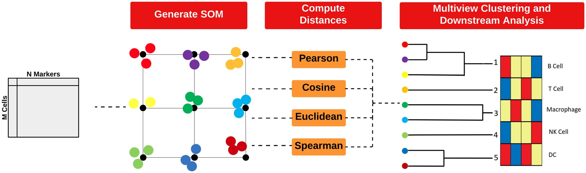

6 Unsupervised clustering for cell annotation
Cell type annotation is the process of assigning each cell a specific identity based on its marker expression profile. Identifying cell types is a key step in many spatial analysis workflows, as it shapes how we analyse tissue composition, measure cell-cell interactions, and track disease mechanisms.
But cell type annotation isn’t always clear-cut. Marker expression often varies along a continuum rather than forming distinct groups, and overlapping profiles combined with technical noise can blur boundaries, making it tricky to assign confident labels. These uncertainties can cascade through your analysis, affecting clustering, interpretation, and downstream results.
There are two main ways to assign cell types: unsupervised clustering and supervised annotation. Clustering groups cells based on similarity in marker expression, which can uncover novel or unexpected populations—but biological expertise is often necessary to interpret and label those clusters. Annotation, on the other hand, leverages reference datasets from well-characterised samples to directly assign cell type labels, improving consistency and reproducibility, though it depends on having a relevant and high-quality reference.
Both approaches come with trade-offs. Clustering can miss subtle or rare populations and is sensitive to parameter choices, such as the number of clusters, which can greatly influence results. Annotation risks misclassifying cells if the reference doesn’t capture all the diversity in the sample. This playbook focuses on unsupervised clustering—covering how to select appropriate parameters, determine the optimal number of clusters, and interpret results effectively.
# set parameters
set.seed(51773)
use_mc <- TRUE
if (use_mc) {
nCores <- max(parallel::detectCores()/2, 1)
} else {
nCores <- 1
}
BPPARAM <- simpleSeg:::generateBPParam(nCores)
theme_set(theme_classic())6.1 Clustering with FuseSOM
Clustering of highly multiplexed in situ imaging cytometry data can be performed using tools like FuseSOM, an unsupervised method that combines a Self Organising Map architecture with MultiView integration of correlation-based metrics for enhanced robustness and accuracy. FuseSOM supports multiple data structures, including SingleCellExperiment and SpatialExperiment objects, as well as DataFrames.

6.1.1 FuseSOM Matrix Input
To demonstrate the functionality of FuseSOM, we will use the Risom 2022 dataset, which profiles the spatial landscape of ductal carcinoma in situ (DCIS), a precursor to invasive breast cancer (IBC). We will be using the markers used in the original study to perform clustering.
We’ll start by running FuseSOM on a DataFrame, then demonstrate how to apply it to SingleCellExperiment and SpatialExperiment objects.
# load in the data
data("risom_dat")
# define the markers of interest (highlighted in the original study)
risomMarkers <- c('CD45','SMA','CK7','CK5','VIM','CD31','PanKRT','ECAD',
'Tryptase','MPO','CD20','CD3','CD8','CD4','CD14','CD68','FAP',
'CD36','CD11c','HLADRDPDQ','P63','CD44')
# we will be using the manual_gating_phenotype as the true cell type to gauge
# performance
names(risom_dat)[names(risom_dat) == 'manual_gating_phenotype'] <- 'CellType'Now that we have loaded the data and defined the markers of interest, we can run the FuseSOM algorithm using the runFuseSOM function. We specify the number of clusters (or cell types) to be 23 based on prior domain knowledge. The output contains the cluster labels as well as the Self Organizing Map model.
risomRes <- runFuseSOM(data = risom_dat, markers = risomMarkers,
numClusters = 23)Let’s look at the distribution of the clusters.
# get the distribution of the clusters
round(table(risomRes$clusters)/sum(table(risomRes$clusters)), 2)
cluster_1 cluster_10 cluster_11 cluster_12 cluster_13 cluster_14 cluster_15
0.32 0.04 0.01 0.02 0.06 0.03 0.02
cluster_16 cluster_17 cluster_18 cluster_19 cluster_2 cluster_20 cluster_21
0.03 0.02 0.08 0.02 0.01 0.05 0.01
cluster_22 cluster_23 cluster_3 cluster_4 cluster_5 cluster_6 cluster_7
0.05 0.07 0.00 0.01 0.04 0.06 0.02
cluster_8 cluster_9
0.01 0.01 It appears that 32% of cells have been assigned to cluster_1. Next, lets generate a heatmap of the marker expression for each cluster using the markerHeatmap function.
risomHeat <- FuseSOM::markerHeatmap(data = risom_dat, markers = risomMarkers,
clusters = risomRes$clusters, clusterMarkers = TRUE)
At this stage, we can evaluate whether our clustering makes biological sense. For example, cluster_10 shows high expression of CD14, a marker for monocytes, so it’s reasonable to annotate cells in this cluster as monocytes. Similarly, cluster_14, with elevated Tryptase expression, could be annotated as mast cells.
In some cases, the clusters cannot be clearly distinguished by a specific cell type marker. cluster_9 shows high expression of CD20, CD45, CD8, and CD3, which are canonical markers for both B cell and T cell populations. Additionally, clusters like cluster_3 and cluster_4 exhibit smearing, meaning their marker expression profiles overlap substantially with multiple cell types. This can indicate mixed or transitional populations, technical noise, or insufficient resolution in clustering.
How do I identify imperfect clustering?
- Do our cell-type specific markers clearly separate out by cluster? We expect to see discrete expression of our markers in specific cell types, e.g., CD4 being expressed in T cells exclusively.
- If we instead see “smearing” of our markers across clusters, where several clusters express high levels of a cell type specific marker such as CD4, it is likely a normalisation issue.
Three common issues which cause imperfect clustering have been outlined below:
- Imperfect segmentation: excessive lateral marker spill over can severely impact downstream clustering, as cell type specific markers leak into nearby cells. This should largely be diagnosed in the segmentation step and will need to be fixed by optimising the upstream segmentation algorithm.
- Imperfect normalization: excessively variable intensities across images could cause issues in the normalization process. This can generally be diagnosed with density plots and box plots for specific markers across images and can be fixed by identifying the exact issue, e.g. extremely high values for a small subset of images, and choosing a normalization strategy to remove/reduce this effect.
-
Imperfect clustering: setting the number of clusters to be low or too high could lead to imperfect clustering. This is usually diagnosed by clusters which either express too many markers very highly or express too few markers, and is usually remedied by choosing an ideal
kbased on an elbow plot described below.
In practice, clustering and annotation are rarely one-and-done. A common strategy is to start by identifying broad cell populations—like T cells, B cells, or monocytes—using a general set of markers. Once these groups are defined, you can isolate specific populations and re-cluster them using more focused markers to distinguish finer subtypes, such as CD4+ and CD8+ T cells. This stepwise approach helps improve resolution and leads to more accurate and informative cell type annotations.
6.1.2 Using FuseSOM to estimate the number of clusters
Before clustering, it’s helpful to estimate how many clusters best represent the structure of your data. Elbow plots are a common way to guide this decision. On these plots, the x-axis shows the number of clusters (k), while the y-axis shows a clustering quality metric—such as within-cluster variation, silhouette width, or another distance-based score. As k increases, the metric usually improves, but only up to a point. The “elbow” refers to where this improvement begins to level off, suggesting that adding more clusters beyond this point gives diminishing returns. That inflection point is typically interpreted as the optimal number of clusters.
We can generate these plots using the estimateNumCluster function from the FuseSOM package, which supports both a discriminant-based method and a range of distance-based metrics:
- Discriminant based method
- This method attempts to find a projection of the data that maximizses the separation between clusters, helping to identify the most distinct groupings in the dataset.
- Distance based methods
- Gap Statistic: compares the total within-cluster variation for different values of k with expected values under a null reference distribution.
- Jump Statistic: measures how much the data “jumps” or changes structure when moving from
ktok+1clusters. - Slope Statistic: looks at the rate of change (slope) in clustering quality metrics as
kincreases. - Within Cluster Dissimilarity Statistic: quantifies how similar the data points are within each cluster.
- The Silhouette Statistic: combines measures of cohesion (how close points are within a cluster) and separation (how far apart clusters are).
By setting method = c("Discriminant", "Distance"), we can run both approaches and compare their suggested number of clusters. This gives a more comprehensive view of the clustering landscape, especially when the true number of underlying cell types is unknown.
# lets estimate the number of clusters using all the methods
# original clustering has 23 clusters so we will set kseq from 2:25
# we pass it the SOM model generated in the previous step
risomKest <- estimateNumCluster(data = risomRes$model, kSeq = 2:25,
method = c("Discriminant", "Distance"))We can then use this result to determine the best number of clusters for this dataset based on the different metrics.
# what is the best number of clusters determined by the discriminant method?
risomKest$Discriminant [1] 7According to the Discriminant method, the optimal number of clusters is 7.
We can use the optiPlot() function to generate an elbow plot with the optimal number of clusters for the distance based methods.
# we can plot the results using the optiplot function
pSlope <- optiPlot(risomKest, method = 'slope')
pSlope
pJump <- optiPlot(risomKest, method = 'jump')
pJump
pWcd <- optiPlot(risomKest, method = 'wcd')
pWcd
pGap <- optiPlot(risomKest, method = 'gap')
pGap
pSil <- optiPlot(risomKest, method = 'silhouette')
pSil
From the plots, we see that the Jump statistic almost perfectly identifies the expected number of clusters, showing a clear and sharp increase at k = 24. This suggests that the structure of the data changes meaningfully at that point, making it an effective indicator of the optimal number of clusters in this case. The Gap statistic also performs relatively well, selecting a lower value (15 clusters), which may still be reasonable depending on the biological context and the presence of closely related subpopulations. In contrast, the other distance-based methods—such as the Silhouette, Slope, and Within-Cluster Dissimilarity statistics—significantly underestimate the number of clusters.
Overall, these results highlight the importance of testing multiple metrics and not relying on a single method. It’s also helpful to complement these quantitative results with biological interpretation—e.g., inspecting marker expression within clusters—to ensure that the chosen k aligns with known or expected cell types.
- How do we choose our
k? We’re generally looking for thekbefore the point of greatest inflection, or the point beyond which increasingkresults in minimal improvement to clustering quality. - Is there one best choice for
k? There can be several options ofkif there are several points of inflection. Choose thekwhich best reflects the number of clusters you expect to get from the tissue. For instance, if you are interested in broader cell populations, you might pick a lower value ofk, and if you are interested in identifying subpopulations, you might pick a larger value fork.
6.1.3 FuseSOM with SingleCellExperiment object as input
The FuseSOM algorithm is also equipped to take in a SingleCellExperiment or SpatialExperiment object as input. The results of the pipeline will be written to either the metadata or the colData fields.
First, we create a SingleCellExperiment object using the Risom 2022 data.
# create an SCE object using Risom 2022 data
colDat <- risom_dat[, setdiff(colnames(risom_dat), risomMarkers)]
sce <- SingleCellExperiment(assays = list(counts = t(risom_dat[, names(risom_dat) != "CellType"])),
colData = colDat)
sceclass: SingleCellExperiment
dim: 22 69672
metadata(0):
assays(1): counts
rownames(22): CD45 SMA ... P63 CD44
rowData names(0):
colnames: NULL
colData names(1): X
reducedDimNames(0):
mainExpName: NULL
altExpNames(0):Next, we pass it to the runFuseSOM function. Here, we can provide the assay in which the data is stored (counts) and specify the column to store the clusters in using clusterCol = "clusters". The Self Organizing Map that is generated will be stored in the metadata field.
risomRessce <- runFuseSOM(sce, markers = risomMarkers, clusterCol = "clusters",
assay = 'counts', numClusters = 23, verbose = FALSE)
colnames(colData(risomRessce))[1] "X" "clusters"names(metadata(risomRessce))[1] "SOM"Notice how the there is now a clusters column in the colData and a SOM field in the metadata.
If necessary, you can run runFuseSOM with a new cluster number and specify a new clusterCol. If clusterCol contains a new name, the new clusters will be stored in the new column. Otherwise, it will overwrite the the current clusters column. Running FuseSOM on the same SingleCellExperiment object will overwrite the existing SOM field in the metadata.
Just like before, we can plot a heatmap of the resulting clusters across all markers.
data <- risom_dat[, risomMarkers] # get the original data used
clusters <- colData(risomRessce)$clusters # extract the clusters from the SCE object
# generate the heatmap
risomHeatsce <- markerHeatmap(data = risom_dat, markers = risomMarkers,
clusters = clusters, clusterMarkers = TRUE)
Or we can directly plot from the SCE using the scater package.
# Visualise marker expression in each cluster.
scater::plotGroupedHeatmap(
risomRessce,
features = risomMarkers,
group = "clusters",
exprs_values = "counts",
center = TRUE,
scale = TRUE,
zlim = c(-3, 3),
cluster_rows = FALSE,
block = "clusters"
)
6.1.4 Using FuseSOM to estimate the number of clusters for SingleCellExperiment objects
Just like before, we will use estimateNumCluster on our Risom SingleCellExperiment object.
# lets estimate the number of clusters using all the methods
# original clustering has 23 clusters so we will set kseq from 2:25
risomRessce <- estimateNumCluster(data = risomRessce, kSeq = 2:25,
method = c("Discriminant", "Distance"))You have provided a dataset of class: SingleCellExperimentNow Computing the Number of Clusters using Discriminant AnalysisNow Computing The Number Of Clusters Using Distance Analysisnames(metadata(risomRessce))[1] "SOM" "clusterEstimation"The metadata now contains a clusterEstimation field which holds the results from the estimateNumCluster function.
We can assess the results of cluster estimation as below.
# what is the best number of clusters determined by the discriminant method?
metadata(risomRessce)$clusterEstimation$Discriminant [1] 7According to the discrminant method, the optimal number of clusters is 7.
# we can plot the results using the optiplot function
pSlope <- optiPlot(risomRessce, method = 'slope')
pSlope
pJump <- optiPlot(risomRessce, method = 'jump')
pJump
pWcd <- optiPlot(risomRessce, method = 'wcd')
pWcd
pGap <- optiPlot(risomRessce, method = 'gap')
pGap
pSil <- optiPlot(risomRessce, method = 'silhouette')
pSil
Again, we see that the Jump statistic almost perfectly captures the correct number of clusters with 24 clusters. The Gap method is a close second with 15 clusters. All the other methods significantly underestimate the number of clusters.
6.2 sessionInfo
R version 4.5.0 (2025-04-11)
Platform: aarch64-apple-darwin20
Running under: macOS Sonoma 14.4.1
Matrix products: default
BLAS: /Library/Frameworks/R.framework/Versions/4.5-arm64/Resources/lib/libRblas.0.dylib
LAPACK: /Library/Frameworks/R.framework/Versions/4.5-arm64/Resources/lib/libRlapack.dylib; LAPACK version 3.12.1
locale:
[1] en_US.UTF-8/en_US.UTF-8/en_US.UTF-8/C/en_US.UTF-8/en_US.UTF-8
time zone: Australia/Sydney
tzcode source: internal
attached base packages:
[1] stats4 stats graphics grDevices utils datasets methods
[8] base
other attached packages:
[1] ggplot2_3.5.2 scuttle_1.18.0
[3] simpleSeg_1.10.0 MLmetrics_1.1.3
[5] STexampleData_1.16.0 SpatialExperiment_1.18.1
[7] SingleCellExperiment_1.30.1 SummarizedExperiment_1.38.1
[9] Biobase_2.68.0 GenomicRanges_1.60.0
[11] GenomeInfoDb_1.44.0 IRanges_2.42.0
[13] S4Vectors_0.46.0 MatrixGenerics_1.20.0
[15] matrixStats_1.5.0 ExperimentHub_2.16.0
[17] AnnotationHub_3.16.0 BiocFileCache_2.16.0
[19] dbplyr_2.5.0 BiocGenerics_0.54.0
[21] generics_0.1.4 FuseSOM_1.10.0
loaded via a namespace (and not attached):
[1] splines_4.5.0 later_1.4.2 bitops_1.0-9
[4] ggplotify_0.1.2 filelock_1.0.3 tibble_3.2.1
[7] svgPanZoom_0.3.4 polyclip_1.10-7 lifecycle_1.0.4
[10] rstatix_0.7.2 fastcluster_1.3.0 prabclus_2.3-4
[13] lattice_0.22-6 MASS_7.3-65 backports_1.5.0
[16] magrittr_2.0.3 rmarkdown_2.29 yaml_2.3.10
[19] httpuv_1.6.16 flexmix_2.3-20 sp_2.2-0
[22] DBI_1.2.3 RColorBrewer_1.1-3 abind_1.4-8
[25] purrr_1.0.4 RCurl_1.98-1.17 nnet_7.3-20
[28] yulab.utils_0.2.0 rappdirs_0.3.3 GenomeInfoDbData_1.2.14
[31] ggrepel_0.9.6 irlba_2.3.5.1 spatstat.utils_3.1-4
[34] terra_1.8-50 pheatmap_1.0.12 vegan_2.6-10
[37] svglite_2.2.1 permute_0.9-7 codetools_0.2-20
[40] DelayedArray_0.34.1 tidyselect_1.2.1 raster_3.6-32
[43] UCSC.utils_1.4.0 farver_2.1.2 ScaledMatrix_1.16.0
[46] viridis_0.6.5 jsonlite_2.0.0 BiocNeighbors_2.2.0
[49] Formula_1.2-5 scater_1.36.0 systemfonts_1.2.3
[52] tools_4.5.0 Rcpp_1.0.14 glue_1.8.0
[55] mnormt_2.1.1 gridExtra_2.3 SparseArray_1.8.0
[58] xfun_0.52 mgcv_1.9-3 EBImage_4.50.0
[61] dplyr_1.1.4 HDF5Array_1.36.0 withr_3.0.2
[64] shinydashboard_0.7.3 BiocManager_1.30.25 fastmap_1.2.0
[67] rhdf5filters_1.20.0 rsvd_1.0.5 digest_0.6.37
[70] R6_2.6.1 mime_0.13 gridGraphics_0.5-1
[73] DataVisualizations_1.3.3 textshaping_1.0.1 colorspace_2.1-1
[76] spatstat.data_3.1-6 jpeg_0.1-11 dichromat_2.0-0.1
[79] RSQLite_2.3.11 diptest_0.77-1 h5mread_1.0.1
[82] tidyr_1.3.1 robustbase_0.99-4-1 class_7.3-23
[85] httr_1.4.7 htmlwidgets_1.6.4 S4Arrays_1.8.0
[88] pkgconfig_2.0.3 gtable_0.3.6 modeltools_0.2-24
[91] blob_1.2.4 XVector_0.48.0 htmltools_0.5.8.1
[94] carData_3.0-5 fftwtools_0.9-11 scales_1.4.0
[97] png_0.1-8 spatstat.univar_3.1-3 knitr_1.50
[100] rstudioapi_0.17.1 rjson_0.2.23 nlme_3.1-168
[103] curl_6.2.3 proxy_0.4-27 cachem_1.1.0
[106] rhdf5_2.52.0 stringr_1.5.1 BiocVersion_3.21.1
[109] parallel_4.5.0 vipor_0.4.7 AnnotationDbi_1.70.0
[112] pillar_1.10.2 grid_4.5.0 vctrs_0.6.5
[115] promises_1.3.2 ggpubr_0.6.0 BiocSingular_1.24.0
[118] car_3.1-3 beachmat_2.24.0 xtable_1.8-4
[121] cluster_2.1.8.1 princurve_2.1.6 beeswarm_0.4.0
[124] evaluate_1.0.3 magick_2.8.5 cli_3.6.5
[127] locfit_1.5-9.12 compiler_4.5.0 rlang_1.1.6
[130] crayon_1.5.3 analogue_0.18.0 ggsignif_0.6.4
[133] labeling_0.4.3 mclust_6.1.1 fs_1.6.6
[136] ggbeeswarm_0.7.2 stringi_1.8.7 psych_2.5.3
[139] deldir_2.0-4 viridisLite_0.4.2 BiocParallel_1.42.0
[142] nnls_1.6 FCPS_1.3.4 cytomapper_1.20.0
[145] Biostrings_2.76.0 tiff_0.1-12 coop_0.6-3
[148] profileModel_0.6.1 spatstat.geom_3.4-1 Matrix_1.7-3
[151] bit64_4.6.0-1 Rhdf5lib_1.30.0 fpc_2.2-13
[154] KEGGREST_1.48.0 shiny_1.10.0 brglm_0.7.2
[157] kernlab_0.9-33 broom_1.0.8 memoise_2.0.1
[160] DEoptimR_1.1-3-1 bit_4.6.0